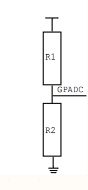
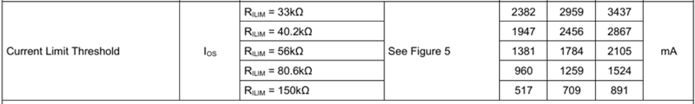

00_OK153-S 硬件手册
版本：V1.1
发布日期：2026.01.12
文件密级：□绝密 □秘密 □内部资料 ■公开
声明
本手册版权归保定飞凌嵌入式技术有限公司所有。未经本公司的书面许可，任何单位和个人无权以任何形式复制、传播、转载本手册的任何部分，违者将被追究法律责任。
保定飞凌嵌入式有限公司所提供的所有服务内容旨在协助用户加速产品的研发进度，在服务过程中所提供的任何程序、文档、测试结果、方案、支持等资料和信息，都仅供参考，用户有权不使用或自行参考修改，本公司不提供任何的完整性、可靠性等保证，若在用户使用过程中因任何原因造成的特别的、偶然的或间接的损失，本公司不承担任何责任。
概 述
本手册以使用户快速熟悉产品，了解接口功能和功能配置为目的，主要讲述了开发板接口功能，接口介绍，产品功耗，以及使用过程中出现的一些问题如何排查。在说明过程中，对一些命令进行了注释，方便用户理解，以实用够用为主。涉及到引脚功能复用、硬件设计指南等请参考飞凌提供的《FET153-S引脚复用对照表》。
本手册一共分为4部分：
第一部分CPU整体概述，简单介绍了CPU性能和应用行业；
第二部分核心板的整体介绍，包括连接器引脚的相关说明和功能介绍；
第三部分开发板的整体介绍，分为多个章节介绍，包括了硬件原理和简单的设计思路两大部分；
第四部分产品的功耗及其他说明，主要描述板子的功耗方面表现和其他注意事项。
本手册中一些符号及格式的相关说明：
表现形式 |
含义 |
|---|---|
⁉️ |
注意或者是需要特别关注的信息，一定要仔细阅读 |
📚 |
对测试章节做的相关说明 |
🛤️ |
表示相关路径 |
更新记录
日期 |
手册版本 |
核心板版本 |
底板版本 |
更新内容 |
|---|---|---|---|---|
20250924 |
V1.0 |
V1.1 |
V1.1及以上版本 |
初版 |
20260112 |
V1.1 |
V1.1 |
V1.2及以上版本 |
更新3.5.6 TF卡章节：为解决在TF卡启动且加环境变量时，存在部分TF卡启动异常的问题。 |
01_Allwinner T153简介
Allwinner T153是面向工业自动化领域的四核SOC，可应用于交互终端、智能制造等工业设备。T153集成了一个四核Cortex-A7 CPU和一个单核E907 RISC-V，该种异构架构可实现计算与实时控制的平衡。
此外，T153系列支持RGB/MIPI DSI/LVDS接口的组合。T153还包含3× GMAC，2 × CAN-FD和1X 8-/16-/32-bit Local Bus，适合工业应用和扩展。
T153应用处理器框图

02_FET153-S核心板介绍
2.1 FET153-S核心板外观图

核心板正面图(EMMC版本)

核心板背面图（EMMC版本）
2.2 FET153-S核心板尺寸图

结构尺寸：44mm×35mm，尺寸公差±0.13mm，更多尺寸信息参见DXF文件。
制版工艺：厚度1.2mm， 8 层沉金PCB。
核心板采用邮票孔+LGA封装形式，共引出185个引脚.
邮票孔引脚中心间距为1mm;LGA封装引脚中心间距：1.27mm
连接器尺寸图见附录。
2.3 性能参数
2.3.1 系统主频
名称 |
规格 |
说明 |
|||
|---|---|---|---|---|---|
最小 |
典型 |
最大 |
单位 |
||
系统主频 |
— |
— |
1.6 |
GHz |
— |
系统RTC时钟 |
— |
32.768 |
— |
KHz |
— |
2.3.2 供电参数
参数 |
引脚标号 |
规格 |
说明 |
|||
|---|---|---|---|---|---|---|
最小 |
典型 |
最大 |
单位 |
|||
主电源电压 |
DCIN |
4.75 |
5 |
5.25 |
V |
— |
2.3.3 工作环境
参数描述 |
规格 |
说明 |
||||
|---|---|---|---|---|---|---|
最小 |
典型 |
最大 |
单位 |
|||
工作温度 |
工作环境 |
-40 |
25 |
+85 |
℃ |
工业级 |
存储环境 |
-40 |
25 |
+125 |
℃ |
||
湿度 |
工作环境 |
10 |
— |
90 |
％RH |
无凝露 |
存储环境 |
5 |
— |
95 |
％RH |
2.3.4 ESD特性
参数 |
规格 |
说明 |
||
|---|---|---|---|---|
最小 |
最大 |
单位 |
||
ESD HBM(ESDA/JEDEC JS-001-2017) |
-2000 |
+2000 |
V |
适用核心板所有引脚 |
ESD CDM(ESDA/JEDEC JS-002-2018) |
-250 |
+250 |
V |
适用核心板所有引脚 |
注：
1、 以上数据来源芯片手册
2、 核心板所有引出信号均为静电敏感信号，在底板设计时应对接口做好静电防护，并在核心板运输、
组装、使用过程中注意做好静电防护。
2.4 核心板接口资源
功能 |
数量 |
参数 |
|---|---|---|
Parallel CSI |
≤1 |
支持8/10/12/16位宽， 支持BT.656 up to 2-ch720P@30fps and BT.1120 up to 2-ch 1080P@30fps,RAW up to 4-ch720P@30fps |
MIPI CSI |
≤2 |
支持的组合 4-lane/2+2-lane；, Up to 1.0 Gbit/s per lane; |
MIPI DSI(1) |
≤1 |
支持4-lane MIPI DSI，Up to 1920x1200@60fps，1.0 Gbit/s per lane |
RGB LCD(1) |
≤1 |
DE/SYNC模式，up to 1920x1080@60fps；RGB888,RGB666和RGB565像素格式 |
LVDS(1) |
≤2 |
Up to 1920 x 1080@60fps for dual link; Up to 1366x768@60fps for single-link |
SDIO |
≤2 |
SMHC0，用于SD卡 ; SMHC1，用于SDIO接口，仅支持3.3V模式 |
Audio |
≤1 |
内置音频codec，支持一路差分LINEOUT输出 |
I2S |
≤3 |
支持主/从模式，采样率8kHz到384kHz；I2S0/2支持4lane 应用；I2S1支持2lane应用 |
DMIC |
≤1 |
支持 8 通道，采样率 8kHz 至 48kHz |
USB2.0 DRD |
1 |
支持主从，支持High-Speed，480Mbps |
USB2.0 HOST |
1 |
只做主模式，支持High-Speed，480Mbps |
GMAC |
≤3 |
支持 RMII/RGMII 接口，支持速率 10/100/1000 Mbit/s |
CAN-FD |
≤2 |
支持CAN-FD（up to 64 data bytes），支持CAN 2.0A与CAN2.0B |
Local Bus |
≤1 |
支持8/16/32位宽，最高接口速度：150MHz@16bits，100MHz@32bits |
SPI(2) |
≤3 |
支持主/从模式，主模式最高100MHz时钟；SPI2,SPI3支持SPI模式；SPI1支持SPI模式与DBI模式 |
TWI(3) |
≤5 |
兼容 I2C 标准，标准模式 100 kbit/s，快速模式 400 kbit/s |
UART(4) |
≤10 |
兼容行业标准 16450/16550 |
GPADC |
≤24 |
12 位采样分辨率，最大采样率 1MHz;其中GPADC2有4个通道复用为TPADC |
TPADC |
≤1 |
4线电阻触摸，12bit SAR类型AD转换 |
PWM&PWMCS |
≤30 |
PWM输出频率 024MHz 或 0100MHz；PWMCS输出频率0~4MHz，支持最大最小频率限制 |
LEDC |
≤1 |
控制LED灯，可编程输出高低宽度，数据数据可达800kbit/s |
IR TX |
≤1 |
红外输出 |
IR RX |
≤4 |
红外接收 |
GPIO |
≤124 |
注：表中参数为硬件设计或CPU理论值；
注（1）： RGB,LVDS,MIPI-DSI 有引脚复用关系，请阅读芯片数据手册或者引脚复用表格；
注（2）：SPI0 被核心板占用，底板不能使用；
注（3）：S-TWI0 被核心板占用，底板不能使用；
注（4）：其中UART0用作调试串口，建议用户保留设计；
2.5 FET153-S 核心板引脚定义
2.5.1 FET153-S 核心板引脚原理图


2.5.2 FET153-S 核心板引脚功能说明
用户在有多种功能扩展需求时可参阅用户资料《FET153-S引脚复用表格》,但若需了解更详细的信息，建议用户查阅相关资料文档及芯片数据手册及参考手册。
2.6 核心板硬件设计说明
电源引脚
功能 |
信号名称 |
I/O |
默认功能 |
引脚号 |
|---|---|---|---|---|
电源 |
VCC-5V-SYS |
电源输入 |
核心板电源供电引脚5V，底板提供电流不少于2A |
3,4,184,185 |
VCC-3V3 |
电源输出 |
仅用于控制底板上电时序和SD卡供电，输出电流能力最大500mA |
1 |
|
GND |
地 |
核心板电源地和信号地，所有GND引脚都需要连接 |
- |
系统控制引脚
功能 |
信号名称 |
I/O |
默认功能 |
引脚号 |
|---|---|---|---|---|
CPU复位 |
AP-RESET |
I |
核心板系统复位信号输入，低电平有效，用户不要在该引脚添加任何阻容，以免影响核心板正常启动 |
144 |
烧写 |
FEL |
I |
进入USB OTG强制烧写模式，低电平有效 |
143 |
CPU中断 |
AP-NMI |
I |
中断输入，底板默认不使用 |
155 |
BOOT启动选项 |
BOOT-SEL[0:1] |
I |
默认[1:1]，集成在核心板；启动顺序：SDC0->SPI2_NOR(4线)->SPI2_NOR(1线)->SPI2_NAND->EMMC2_USR->EMMC2_BOOT->SPI0 NAND->USB; |
- |
注：BOOT SEL在芯片内部默认上拉，pin浮空时为高电平FET153-S核心板已经将电源、CPU、存储电路集成于一个小巧的模块上，所需的外部电路非常简洁,构成一个最小系统只需要 5V 电源、复位按键、烧写按键即可运行,如下图所示:

最小系统原理图可以参见附录四。不过一般情况下，除最小系统外建议连接上一些外部设备，例如调试串口，否则用户无法判断系统是否启动。做好这些后，再在此基础上根据飞凌提供的核心板默认接口定义来添加用户需要的功能。
核心板外围电路的设计可参见第三章的3.5节“OK153-S底板说明”。
03_飞凌OK153-S嵌入式开发平台介绍
3.1 OK153-S开发板接口图
飞凌OK153-S开发平台核心板和底板采用邮票孔与LGA的连接方式，主要接口如下图所示:

3.2 OK153-S开发板尺寸图

PCB尺寸：130mm×190mm。
固定孔尺寸：间距：120mm×180mm，孔径：3.2mm。
制版工艺：厚度1.6mm，4层PCB。
电源电压：直流12V。
OK153-S底板预留了1个直径3.2mm散热片的安装孔，用户可以根据现场环境选配安装散热片，散热片和核心板接触面请加一层绝缘的导热硅胶垫。飞凌自选的核心板散热片尺寸为：38mm×38mm×10mm,更多详细尺寸参见下图：

3.3 底板命名规范
ABC-D+IK:M
字段 |
字段描述 |
值 |
说明 |
|---|---|---|---|
A |
合格等级 |
PC |
原型样品 |
空白 |
大规模生产 |
||
B |
产品线标识 |
OK |
飞凌嵌入式开发板 |
C |
CPU名称 |
153 |
T153 |
- |
分段标识 |
- |
|
D |
连接方式 |
S |
邮票孔 |
+ |
分段标识 |
+ |
此标识之后为配置参数部分 |
I |
运行温度 |
C |
0 to 70℃ 商业级 |
I |
-40 to 85℃ 工业级 |
||
K |
PCB版本号 |
11 |
V1.1 |
xx |
Vx.x |
||
:M |
厂家内部标识 |
:X |
此内容为厂家内部标识，对客户使用无影响 |
3.4 底板资源
功能 |
数量 |
参数 |
|---|---|---|
LCD(1) |
1 |
RGB666 18位，核心板可最高支持 RGB888 24位，最高支持1080p@60fps |
LVDS (1) |
1 |
双八位，最高支持 1080p@60fps |
MIPI-DSI(1) |
1 |
需要LVDS转MIPI转接板，支持4lane，最高支持1080p@60fps； |
Ethernet |
1 |
10/100/1000Mbps 自适应，RJ-45 接口 |
TYPE-C （DEBUG） |
1 |
将调试 UART 转换为 USB 引出，分别调试 CPUX和RISC-V |
TYPE-C （USB0） |
1 |
原生 USB0 接口，支持 OTG 功能 |
USB Host |
3 |
由集线器扩展,USB 2.0（最高支持 480 Mbps） |
TF |
1 |
支持 SD3.0 协议，支持高低速卡切换 |
MIPI CSI |
2 |
2路2Lane-MCSI,支持720P |
WiFi&BlueTooth（2） |
1 |
板载 6221A-SRC，2.4G/5G 双频 Wi-Fi，BT5.0，以及音频功能。 Wi-Fi 功能占用 1 路 SDIO 接口； BT 功能占用 1 路 UART 接口 预留 1 路 I2S供音频使用 |
PWM |
1 |
接到液晶背光调节 |
GPADC |
4 |
1.8V 电压，底板板载滑动变阻器方便测试 |
RTC |
1 |
板载CR2032电池，断电保持走时 |
Audio（2） |
2 |
包含了 1 个的四段式耳机接口，内置 HP 和 MIC； 1 个单声道的 SPEAKER 接口 |
KEY |
3 |
包括了复位、烧写、GPIO按键 |
CAN-FD |
2 |
带防护电路的 CAN-FD |
485 |
2 |
具有自动收发控制，并带防护电路 |
IR_RX |
1 |
IR_RX，采样速率 1MHz，64*8bits 缓存 |
4G |
1 |
由USB2.0集线器扩展； |
LED |
2 |
GPIO控制LED |
LEDC |
1 |
用于控制外部智能LED灯 |
SPI |
1 |
其与RJTAG，JTAG的信号存在复用关系 |
RJTAG |
1 |
空焊2.54mm插针，与SPI3，JTAG的信号存在复用关系 |
JTAG |
1 |
空焊2.54mm 插针，与SPI3，RJTAG的信号存在复用关系 |
注：表中参数为硬件设计或CPU理论值；
注（1）：LCD、MIPI-DSI和LVDS存在接口复用，只能三选一使用；
注（2）：该两种功能使用同一路I2S；目前该I2S为AUDIO使用。
3.5 OK153-S底板说明
注：下图中元件位号有“_DNP”标识的，代表此元器件默认不焊接。
注：本手册中原理图仅做接口说明，用户做硬件设计请参考源文件资料。
3.5.1 底板电源
如图所示，12V 适配器通过电源座 P4 给开发板供电。其中 VDD-5V 给核心板供电，核心板上电后，输出 VDD33 控制底板 U5和U9使能导通。
VDD33 是保证了核心板先上电，底板后上电，以防闩锁效应的发生损坏CPU。
注意：客户自行设计时，需参考开发板设计上电时序，即核心板输出的 VDD33 作为底板 DC-DC 电源的使能，从而保证核心板先上电，底板后上电。


3.5.2 BOOT
启动顺序默认配置为SDC0->SPI2_NOR(4线)->SPI2_NOR(1线)->SPI2_NAND->EMMC2_USR->EMMC2_BOOT-> SPI0 NAND->USB。BOOT相关电阻集成在核心板中。
注：核心板中的BOOT SEL在CPU内部默认上拉，pin浮空时为高电平
3.5.3 功能按键
如图所示，AP-RESET 为系统复位按键，按下后系统复位重启。FEL 按下后，使开发板进入强制升级模式，可以连接电脑 USB 进行系统烧写。NMI为CPU中断，暂未使用。LED_FET153-S为核心板心跳灯，为方便观察，在底板上引出。


3.5.4 调试串口
核心板的UART0是CPUX调试串口；UART8为RISC-V 的调试串口。
为方便用户使用，使用 USB 转串口芯片CH342将 UART0和UART8集成在 USB Type-C 接口上。
要使用调试串口，请首先在电脑上安装相应驱动，然后使用 USB 转 TypeC 线将开发板 P5和电脑USB口连接，在电脑上打开调试终端工具，例如 Putty，设置波特率 115200，数据位 8，无校验位，停止位 1，选择正确的COM口，给开发板上电启动，就可以看到调试串口信息。


注意：
1.为方便后期调试，请用户在自行设计底板时将此调试串口引出。
2.底板调试串口做了防漏电设计，避免因串口线电平不匹配或漏电等其他原因导致工作异常，建议用户参考此设计
3.UART0调试串口均不建议作为普通串口使用，以及其他功能使用。
3.5.5 JTAG & RJTAG接口
开发板通过2.54mm插针分别引出JTAG和RJTAG，目前为空焊，其可通过仿真器对两个不同的核心进行仿真。此外，JTAG，RJTAG以及SPI3信号存在复用功能。

3.5.6 TF卡
开发板TF Card为CPU的SDC0通道。TF卡的供电使用核心板输出的VDD33。此外，该设备支持高低速卡切换


注意：为支持高低速卡，需要控制TF卡的3.3V电源上下电
**注意：确保硬复位和软复位都可以实现TF卡电源控制 **
注意：目前需要保证CPU掉电的同时，TF卡也可以瞬间掉电
注意：目前底板预留两种设计方案，RESET信号进行TF卡电源的控制；使用PE0进行TF卡电源的控制，目前R64为空焊状态，R55为焊接状态
3.5.7 RTC
底板通过 TWI3 外挂 RTC 设备，并通过 D7 实现 VCC_3V3 和纽扣电池兼容供电，即在底板断电后，纽扣电池可以为 RTC 芯片保持供电。默认使用 RX8010SJ 芯片设计。纽扣电池型号为 CR2032。

3.5.8 GPADC*
GPADC 使用 2.54mm 间距 2*3P 的插针引出，并配合有滑动变阻器，可以通过杜邦线直连，核心板共4 路 GPADC，最大采样电压 1.8V。

注意：如果ADC通过两个分压电阻获得相应的数值，则不同的采样率会对不同的电阻值总和有不同的要求，如下：采样率50KHz（default）R1+R2<320K采样率10KHz R1+R2<160K采样率100KHz R1+R2<155K采样率1000KHz R1+R2<3.9K

GPADC与电阻触摸信号存在复用关系*该功能暂不支持
3.5.9 IR接口
IR 接口连接了 HS0038B 接收器，可以使用红外的遥控器对该接收器位置发送红外信号，该接口可以接收并将信息显示在调试串口中。

3.5.10 Type-C接口
底板的 TYPE-C 接口连接了核心板的 USB0 接口，该接口支持 OTG 功能，既可以连接电脑做 USB烧写，也可以连接 U 盘进行存储。

3.5.11 USB2.0-A

OK153-S开发板板载了一路USB2.0的HUB，下行四个USB HOST，在开发板上分别连接三个USB2.0-A标准接口和一个mini-PCIE接口，mini-PCIE接口可以连接4G模块EC20，以实现4G上网功能，其余接口可以连接其他USB标准设备。
注意：USB2.0-A接口，均添加负载开关，该器件的限流值可以通过电阻进行修改

3.5.12 WiFi&BT
OK153-S开发板板载WIFI&BT一体模块，模块型号为6221A-SRC。WIFI使用SDIO接口，2.4GHz和5GHz双频段,蓝牙使用UART&PCM接口，符合BT 4.2 Module。

注意：该模块所使用的I2S信号与AUDIO所使用的I2S相同，目前该组信号为空焊状态。
3.5.13 4G


开发板板载了 mini-PCIE 接口，设计连接 4G 模块，可连接 EC20 模块，独立可控供电， 板载 SIM 卡接口。请在开发板上电前将 4G 模块安装到位并用闩锁卡住。
注意：SIM卡槽为Nano-SIM卡，SIM卡缺口朝内插入卡槽。
3.5.14 RGMII
支持一路原生的 1000M/100M/10M 自适应网口，使用核心板的一路 RGMII 接口，配合 YT8521SH 芯片实现，并通过标准的带有网络变压器的 RJ45 座引出，可以对外连接网络设备实现局域网通讯和外网通讯。


3.5.15 AUDIO

开发板板载了NAU88C22YG芯片，使用标准的 3.5mm 耳机插孔，实现双声道耳机、MIC 输入。
注意：该功能所使用的I2S信号与WIFI&BT所使用的I2S相同，目前该组信号为焊接状态。
3.5.16 LINEOUT接口

开发板利用原生的差分LINEOUT信号，使用TPA6017A2PWP芯片外部引出喇叭接口，设计推动 3Ω/2W 的喇叭。
3.5.17 CAN-FD


开发板使用原生的CAN-FD 配合TDH541SCANFD 引出两路CAN接口，该接口有隔离防护设计，可以满足大多数场景下的防护需求。
3.5.18 485

OK153-S开发板使用原生的UART配合TDH341S485S引出两路标准485接口，该接口支持自动收发控制并有隔离防护设计，可以满足大多数场景下的防护需求。
3.5.19 LEDC

开发板板载了两个智能外控集成LED光源，可通过LEDC专用引脚对级联的WS2812B进行同时控制，进而实现不同的效果。
3.5.20 LED

开发板预留两路GPIO_LED，该两个信号为1.8V电平的信号，且为开漏引脚，核心板已做上拉。
3.5.21 KEY

开发板板载了一个可自定义功能的按键，可以通过对该GPIO引脚的控制实现不同功能。该信号为1.8V电平电压信号，且为开漏引脚，核心板已做上拉。
3.5.22 LVDS接口

开发板使用2.0mm间距的2*19P插针将LVDS信号引出，该组信号与 MIPI 信号和 LCD信号复用，此接口可以连接飞凌标准品10.1寸LVDS屏幕。此外，可通过LVDS转MIPI转接板进行连接飞凌标准品7寸MIPI屏幕。
3.5.23 LCD-RGB666接口

开发板使用0.5mm间距的54P的FPC座将LCD信号引出，该组信号与LVDS 信号复用，电阻触摸信号直连SOC，此接口可以连接飞凌标准品 7 寸 LCD 屏幕电阻电容触摸屏幕，要注意的是，由于引脚复用所以只能同时连接一个屏幕。电阻触摸引脚（TP-X1/X2;TP-Y1/Y2）与GPADC存在复用关系,默认不支持电阻触摸，串阻为空焊状态。
3.5.24 2X2-Lane-MCSI & MCSI_ACAM


开发板支持2个2lane的MIPI摄像头，如OV5645摄像头，此外，利用2.0mm间距的2*10P插针引出相关4-Lane MIPI及其控制信号，支持使用MIPI转模拟摄像头转接板，但因CPU内部只有2个vipp(视频输入处理单元)，所以只能支持2个模拟摄像头。
3.5.25 SPI

SPI信号通过2.0mm间距的2*5P简牛座进行引出，该SPI与RJTAG，JTAG信号互为复用信号。
3.5.26 TPCM*


TPCM为SPI 可信模组（GS-1002-D100），目前只用S2拨码开关进行是否开启TPCM和只启动SPI-NOR的选择。若选择为启用TPCM，SPI-NORflash也会启用。启动度量流程：
系统上电完成，GPIO2引脚为高电平时，认为主板上电完成
TPCM 的 GPIO0 与 CPU 的 RST 连接，用于控制 CPU 复位
TPCM 的 GPIO1 和 GPIO3 与模拟开关控制信号连接，用于控制模拟开关切换，实现 TCM 的 SPI1 和 CPU 的 SPI 分别与 BIOS 连接的切换
TPCM 的 GPIO5,GPIO4 可输入给主板上红绿指示灯，用于指示度量成功或失败状态
TPCM 的 SPI1（主）通过模拟开关与 BIOS 连接，实现读取 BOIS 数据
TPCM 的 SPI0（从）与 CPU 的 SPI 连接，实现可信计算功能。*该功能暂不支持
3.5.27 SPI-NOR*

若不使用TPCM，开发板可以通过配置拨码开关，直接将SPI-NOR连接至CPU，配置为启动选项。
*该功能暂不支持
04_连接器尺寸图
更多详细尺寸请见用户资料dxf文件
下图展示的是底板的邮票孔连接器的Footprint示意图，针对钢网层的特殊设计要求，详见用户资料核心板焊接指导

05_OK153-S开发板Linux系统整机功耗表
编号 |
测试项目 |
核心板功率 |
开发板功率**（含核心板）** |
|---|---|---|---|
1 |
无外接+无操作 |
0.533W |
1.2383W |
2 |
10.1寸LVD屏+无操作 |
0.545W |
4.891W |
3 |
4G+无操作 |
0.543W |
1.540W |
4 |
7寸MIPI屏+无操作 |
0.544W |
3.378W |
5 |
CPU压力+内存+nand读写压力测试 |
1.121W |
1.829W |
注：
测试条件：核心板配置为DDR(256MB)+NAND(256MB)；4G模块移远EC20；屏幕为飞凌选配产品；核心板为5V供电；开发板为12V供电。
功耗仅供参考。
06_最小系统原理图
最小系统包括核心板，BOOT,电源，调试串口，系统镜像烧写接口。
核心板：


BOOT:
核心板已经进行默认配置，BOOT-SEL[0;1]=[1;1]，BOOT启动顺序SDC0->SPI2_NOR(4线)->SPI2_NOR(1线)->SPI2_NAND->EMMC2_USR->EMMC2_BOOT-> SPI0 NAND->USB
DEBUG:

POWER:


USB0:

RST&FEL:

07_硬件设计指南
7.1 boot配置方式
BOOT SEL在CPU内部默认上拉，pin浮空时为高电平；BOOT-SEL配置集成在核心板上，在系统上电或复位后，通过读取系统启动配置引脚的电压，选择不同的烧写和启动方式。BOOT-SEL[0:1]=[1:1]

7.2 GPADC及PA组注意事项
GPADC支持的检测电压范围是0~1.8V。
PA4PA23做GPIO时，支持3.3V IO电平;PA0PA3 做GPIO时，只支持1.8V IO电平，不支持3.3V。
PA4~PA23，不建议一部分用作GPADC，一部分复用成高速信号，只支持复用成普通GPIO。
7.3 TF-CARD设计指南
SDC-CLK引脚不需要上拉电阻，但需要在主控端预留串联电阻位置，并预留滤波电容位置。
GPIO口的PF3和PF6在主控内部有上拉电阻（约 15K，软件上需要使能），外部设计 SDC0-CMD 以及SDC0-DET 电路时，可省去外部上拉的设计。
建议保留SDC-DET信号线上的串联电阻，避免在插入SD CARD 时产生信号下冲，影响信号质量。
7.4 LANEOUT电路设计指南
建议在使用音频功率放大器芯片时，其使能引脚增加下拉电阻，进而避免POP音的出现。
7.5 Local Bus设计指南
命令线(如 BURST 信号, WR 信号, RD 信号)以及地址数据线(LD[31:0])参考时钟信号做等长，若按照 150MHz
设计，建议控制在 300mil 以内，不得超过 500mil。
满足 3W/2W 原则，信号线的过孔数量尽量相同。
参考平面完整。
7.6 部分信号阻抗要求
USB2.0差分阻抗90ohm
MIPI-CSI差分阻抗100ohm
MIPI-DSI差分阻抗100ohm
LVDS差分阻抗100ohm
天线馈线阻抗控制在50ohm,左右包地多打地过孔，该天线馈线相邻层挖空，第三层需要为完整参考地，隔层参考
SDIO走线阻抗50ohm
7.7 部分信号等长建议
名称 |
等长需求 |
间距 |
过孔个数 |
|---|---|---|---|
USB2.0 |
对内<50mil,总长≤6000mil |
其它≥10mil |
≤2 |
MIPI-CSI |
对内<5mil，对间≤300mil |
≥15mil |
≤2 |
SDIO |
D0~D3、CMD 相对 CLK 等长控制≤300mil |
≥9mil |
D0~D3 过孔的数量尽量相同 |